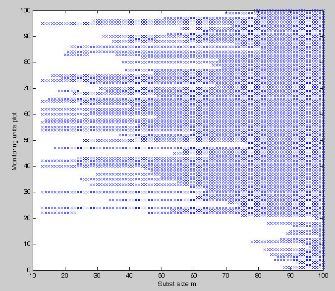
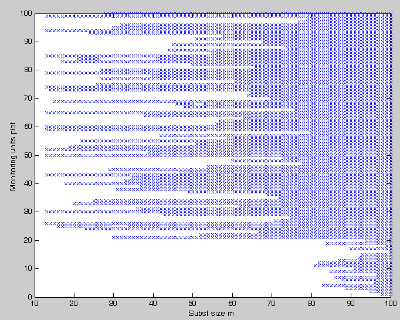

| Flexible Statistics Data Analysis Toolbox™ |
|
Units belonging to the subset in each step of the forward search
[out] = FSRbsb(y,X,bsb)
[out] = FSRbsb(y,X,bsb,param1,val1,param2,val2,...)
[out] = FSRbsb(y,X,bsb) stores the information about the units which belong to the subset for each step. During the forward search in each step the subset size is increased by one and the model refitted to the observations with the smallest residuals for the increased subset size. Usually one observation enters, but sometimes two or more enter the subset as one or more leave. The process continues with increasing subset sizes until, finally, all the data are fitted. As a result of this forward search we have an ordering of the observations by closeness to the assumed model. This function provides detailed information about the units belonging to the subset in each step.
y is a vector of length n containing the response values
X is the n-by-p matrix which contains (in the columns) the values of p predictive terms
bsb is a vector containining the list of units forming the initial subset, if bsb=0 then the
procedure starts with p units randomly chosen
[out] = FSRbsb(y,X,bsb) returns the following information
Un − (n-init) x 11 matrix which contains the unit(s) included
in the subset at each step of the fwd search.
REMARK: in every step
the new subset is compared with the old subset. Un contains the unit(s)
present in the new subset but not in the old one.
Un(1,2) for example
contains the unit included in step init+1.
...
Un(end,2) contains the units
included in the final step of the search.
BB − n x (n-init+1) matrix containing the information about the units belonging
to the subset at each step of the forward search.
1st col = indexes of the units forming subset in the initial step
...
last column = units forming subset in the final step (all units)
[out] = FSRbsb(y,X,bsb,param1,val1,param2,val2,...) specifies one or more of the name/value pairs described in the following table.
| Parameter | Value |
|---|---|
| 'intercept' |
If 1, a model with constant term will be fitted (default) else no constant term will be included. |
| 'init' |
scalar, which specifies the point where to initialize the search
and start monitoring required diagnostics. Notice that if bsb
is supplied init>=length(bsb). if init is not specified it will be set equal to
|
| 'nocheck' |
Scalar. If nocheck is equal to 1 no check is performed on matrix y and matrix X. Notice that y and X are left unchanged. In other words the additional column of ones for the intercept is not added. As default nocheck=0. The controls on h, alpha and nsamp still remain |
state=1000;
randn('state', state);
n=100;
X=randn(n,3);
bet=[3;4;5];
y=3*randn(n,1)+X*bet;
y(1:20)=y(1:20)+15;
[outLMS]=LXS(y,X);
bsb=outLMS.bs;
% Store in matrix BB the units belonging to subset in each step of the forward search
[Un,BB] = FSRbsb(y,X,bsb);
% Create the 'monitoring units plot'
figure;
seqr=[Un(1,1)-1; Un(:,1)];
plot(seqr,BB','bx');
xlabel('Subst size m');
ylabel('Monitoring units plot');
The plot given below, which moniotrs the units belonging to subset in each step of the forward search shows that apart from unit 11 which enters the search in step m=78 all the other contaminated units enter the search in the last 19 steps

Now if we consider the second seed given in page fsr.html (state=500), we obtain the following figure; This plot shows that the 20 contaminated units enter the search in the final 20 steps.
|
|
fsrbonfbound.html | fsrcore.html |
|